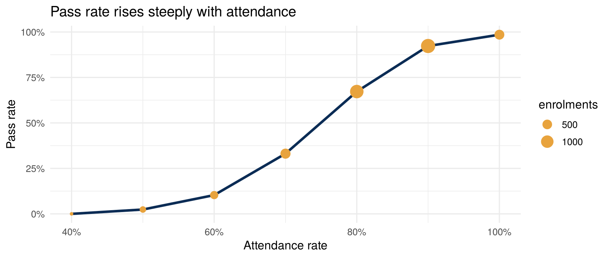

SectorSchools, universities and training providers: progression, attendance, early warning
18.1 Decisions this platform supports
Early warning: which learners are at risk of failing or dropping out this term, early enough to help?
Teaching quality: which courses have unusual pass rates or score distributions?
Capacity: enrolment trends by programme and campus.
Accreditation and returns: consistent numbers for the regulator (NUC, NBTE, state ministries) and for accreditation bodies.
18.2 Architecture mapped to education
Layer
In education
Sources
Student information system, learning management system (Moodle, Canvas, Google Classroom), attendance registers (often paper or Excel), the exam and grading system, fees and finance, surveys
Silver
One learner per real person (matric numbers conformed: case, spaces, old and new formats); scores validated 0–100; attendance ≤ sessions held
spec <-list(name ="education",bronze =list(learners = learners, courses = courses, enrolments = enrolments),silver =list(learners ="SELECT DISTINCT upper(trim(matric)) AS matric, programme, CAST(entry_year AS INTEGER) entry_year, campus FROM bronze.learners",enrolments =" SELECT upper(trim(e.matric)) AS matric, e.course, CAST(e.attended AS INTEGER) attended, 12 * c.sessions_per_week AS sessions_held, CAST(e.score AS DOUBLE) score FROM bronze.enrolments e JOIN bronze.courses c USING (course) WHERE CAST(e.score AS DOUBLE) BETWEEN 0 AND 100 AND CAST(e.attended AS INTEGER) <= 12 * c.sessions_per_week",enrolment_rejects =" SELECT e.*, 'score outside 0-100 or attendance > sessions' AS reason FROM bronze.enrolments e JOIN bronze.courses c USING (course) WHERE NOT (CAST(e.score AS DOUBLE) BETWEEN 0 AND 100 AND CAST(e.attended AS INTEGER) <= 12 * c.sessions_per_week)"),gold =list(fct_enrolment ="SELECT *, attended / sessions_held AS attendance_rate, (score >= 50)::INT AS passed FROM silver.enrolments",mart_early_warning =" SELECT e.matric, l.programme, l.campus, COUNT(*) AS courses, AVG(e.attendance_rate) AS attendance_rate, AVG(e.score) AS mean_score, SUM(1 - e.passed) AS courses_failing, (AVG(e.attendance_rate) < 0.75 AND AVG(e.score) < 50) AS at_risk FROM gold.fct_enrolment e JOIN silver.learners l USING (matric) GROUP BY ALL"),tests =list(t_unique("silver.learners", "matric"),t_unique("gold.fct_enrolment", c("matric", "course")),t_range("gold.fct_enrolment", "score", 0, 100),t_range("gold.fct_enrolment", "attendance_rate", 0, 1),t_relationship("gold.fct_enrolment", "matric", "silver.learners"),t_custom("rejected enrolments ≤ 0.5% (else stop and ask the registry)","SELECT CASE WHEN (SELECT COUNT(*) FROM silver.enrolment_rejects) > 0.005 * (SELECT COUNT(*) FROM bronze.enrolments) THEN 1 ELSE 0 END")),publish =c("gold.mart_early_warning"))ed <-run_pipeline(spec)show_tests(ed$tests)
status
severity
test
failing_rows
PASS
error
unique(silver.learners: matric)
0
PASS
error
unique(gold.fct_enrolment: matric+course)
0
PASS
error
range(gold.fct_enrolment.score in [0, 100])
0
PASS
error
range(gold.fct_enrolment.attendance_rate in [0, 1])
rejected enrolments ≤ 0.5% (else stop and ask the registry)
0
dbGetQuery(ed$con, "SELECT (SELECT COUNT(*) FROM bronze.learners) bronze_learners, (SELECT COUNT(*) FROM silver.learners) silver_learners, (SELECT COUNT(*) FROM silver.enrolment_rejects) quarantined_enrolments")
bronze_learners
silver_learners
quarantined_enrolments
1202
1200
10
Conforming the IDs (upper(trim()), then DISTINCT) merged the two learners recorded twice. The quarantine caught the impossible scores and attendance counts, and those go back to the registry to fix.
18.5 Insight: attendance is the early-warning signal
d <-dbGetQuery(ed$con, "SELECT round(attendance_rate * 10) / 10 AS attendance, AVG(passed) pass_rate, COUNT(*) n FROM gold.fct_enrolment GROUP BY 1 HAVING n > 20 ORDER BY 1")ggplot(d, aes(attendance, pass_rate)) +geom_line(colour ="#0B2C55", linewidth =1.2) +geom_point(aes(size = n), colour ="#E8A33D") +scale_x_continuous(labels = scales::percent) +scale_y_continuous(labels = scales::percent) +labs(x ="Attendance rate", y ="Pass rate", size ="enrolments", title ="Pass rate rises steeply with attendance")

dbGetQuery(ed$con, "SELECT programme, COUNT(*) learners, SUM(at_risk::INT) at_risk FROM gold.mart_early_warning GROUP BY 1 ORDER BY at_risk DESC")
programme
learners
at_risk
BSc Accounting
316
86
BSc Economics
310
73
BSc Business Admin
308
73
BSc Data Science
261
68
Attendance is known weeks before exam scores. That makes it the lever for early intervention: an adviser can call a learner in week 4, not after the exam.
18.6 Deploying in an institution
Owner: the registrar (data) and the academic board (definitions such as “at risk”).
First 90 days: a weekly attendance feed from the LMS and registers, then an adviser list every Monday.
Ethics: “at risk” labels can stigmatise. Use them for support, never for sanctions. Explain the criteria to learners.
Minors: where learners are under 18, apply stricter access and retention, and involve the DPO before any analytics beyond statutory reporting.
18.7 🏋️ Exercises
E18.1 🟢 Which campus has the highest share of at-risk learners? E18.2 🟡 Add a course-level mart with pass rate, mean score and score standard deviation. Flag courses whose pass rate is more than 2 standard deviations from the mean of all courses. E18.3 🔴 Make the early-warning rule weekly: simulate 12 weeks of attendance, and find the earliest week at which the rule identifies 80% of eventual failures.